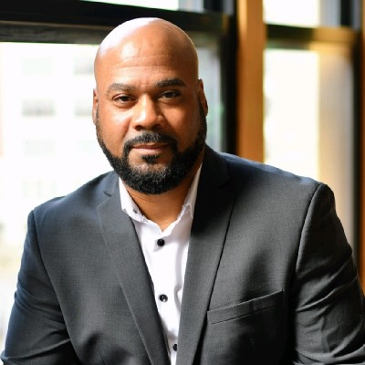
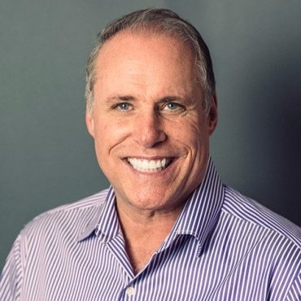

<!doctype html>
<html lang="en">
  <head>
    <title>Home Page</title>
    <!-- Required meta tags -->
    <meta charset="utf-8">
    <meta name="viewport" content="width=device-width, initial-scale=1, shrink-to-fit=no">

    <!-- Bootstrap CSS -->
    <link rel="stylesheet" href="https://stackpath.bootstrapcdn.com/bootstrap/4.3.1/css/bootstrap.min.css" integrity="sha384-ggOyR0iXCbMQv3Xipma34MD+dH/1fQ784/j6cY/iJTQUOhcWr7x9JvoRxT2MZw1T" crossorigin="anonymous">
  </head>
  <body>
      
    <!-- Optional JavaScript -->
    <!-- jQuery first, then Popper.js, then Bootstrap JS -->
    <script src="https://code.jquery.com/jquery-3.3.1.slim.min.js" integrity="sha384-q8i/X+965DzO0rT7abK41JStQIAqVgRVzpbzo5smXKp4YfRvH+8abtTE1Pi6jizo" crossorigin="anonymous"></script>
    <script src="https://cdnjs.cloudflare.com/ajax/libs/popper.js/1.14.7/umd/popper.min.js" integrity="sha384-UO2eT0CpHqdSJQ6hJty5KVphtPhzWj9WO1clHTMGa3JDZwrnQq4sF86dIHNDz0W1" crossorigin="anonymous"></script>
    <script src="https://stackpath.bootstrapcdn.com/bootstrap/4.3.1/js/bootstrap.min.js" integrity="sha384-JjSmVgyd0p3pXB1rRibZUAYoIIy6OrQ6VrjIEaFf/nJGzIxFDsf4x0xIM+B07jRM" crossorigin="anonymous"></script>
  </body>
</html>

  <link rel="stylesheet" type="text/css" href="Students.css">
</head>
<body>

  <!--Nav Bar -->
  <nav class="navbar navbar-expand-sm bg-dark navbar-dark">
    <!-- Brand -->
    <a class="navbar-brand" href="#">
    
  </a>
  
    <!-- Links -->
    <ul class="navbar-nav">
      <li class="nav-item">
        <a class="nav-link" href="Index.html">Home</a>
      </li>
      <li class="nav-item">
        <a class="nav-link" href="Gallery.html">Gallery(2023)</a>
        <a class="nav-link" href="Gallery2022.html">Gallery(2022)</a>
      </li>
  
      <!-- Dropdown -->
      <li class="nav-item dropdown">
        <a class="nav-link dropdown-toggle" href="#" id="navbardrop" data-toggle="dropdown">
          The Summer Camp Year
        </a>
        <div class="dropdown-menu">
          <a class="dropdown-item" href="Students2022.html"> Campers 2022</a>
          <a class="dropdown-item" href="Students2023.html"> Campers 2023</a>
          <a class="dropdown-item" href="video.html">Music Videos</a>
          <a class="dropdown-item" href="Speakers.html">Speakers</a>
         
        </div>
      </li>
    </ul>
  </nav>
  <style>
    body {
      font-family: Arial, sans-serif;
      margin: 0;
      padding: 0;
      background-color: #f4f4f4;
    }
  
    .header {
      background-color: #333;
      color: #ffffff;
      text-align: center;
      padding: 1rem 0;
    }
  
    .container {
      max-width: 1200px;
      margin: 0 auto;
      padding: 2rem;
    }
  
    .speaker {
      display: flex;
      align-items: center;
      padding: 1rem;
      border-bottom: 1px solid #cccccc;
    }
  
    .speaker img {
      width: 100px;
      height: 100px;
      border-radius: 50%;
      margin-right: 1rem;
    }
  
    .speaker-info {
      flex: 1;
    }
  
    .speaker-name {
      font-size: 1.2rem;
      font-weight: bold;
      margin-bottom: 0.5rem;
    }
  
    .speaker-title {
      font-size: 1rem;
      color: #777;
      margin-bottom: 0.5rem;
    }
  
    .speaker-bio {
      font-size: 1rem;
    }
  </style>
  <title>Guest Speakers </title>
  </head>
  <body>
    <div class="header">
      <h2>Featured Speakers</h2>
    </div>
    <div class="container">
      <div class="speaker">
        
        <div class="speaker-info">
          <div class="speaker-name">Malik Wilson</div>
          <div class="speaker-title">NBC Affilifate/ News Caster</div>
          <div class="speaker-bio">
             Malik Co-Hosts Award-Winning and #1 St. Louis lifestyle/entertainment show  Show Me St. Louis.
          </div>
        </div>
      </div>
      <div class="speaker">
        
        <div class="speaker-info">
          <div class="speaker-name">Kevin Bryant </div>
          <div class="speaker-title">CEO of Converstions Global  Marketing </div>
          <div class="speaker-bio">
            He is the executive founder and developer of
Conversions Global Marketing. Kevin is a tactical decision-maker with a keen eye for creative problem solving and
diplomatic negotiating.
          </div>
        </div>
      </div>
    </div>
    <div class="container">
      <div class="speaker">
        
        <div class="speaker-info">
          <div class="speaker-name">InnerGy</div>
          <div class="speaker-title">Owner of InnerGy Enterprises LLC</div>
          <div class="speaker-bio">
            An Award-winning professionally performing Poet, Writer, Vlogger/Blogger, Documentary Journalist, Event MC, TV Broadcast Host, Radio & Podcast Personality, Executive Producer, Event Coordinator, and Creative Consultant and Advisor.
          </div>
        </div>
      </div>
      <div class="speaker">
        
        <div class="speaker-info">
          <div class="speaker-name">Benny Henderson </div>
          <div class="speaker-title">Principal Cloud Architect</div>
          <div class="speaker-bio">
           Benny Henderson is a Principal Cloud Architect at World Wide Technology 
          </div>
        </div>
      </div>
      <!--More Speakers-->
    </div>
    <div class="container">
      <div class="speaker">
        
        <div class="speaker-info">
          <div class="speaker-name">Koran Bolden</div>
          <div class="speaker-title">CEO of Bold Moves Agency</div>
          <div class="speaker-bio">
            Koran Bolden is a national youth motivational speaker, entrepreneur, youth empowerment and outreach consultant who advocates for students to graduate from school by educating them to make healthy life choices.
          </div>
        </div>
      </div>
      <div class="speaker">
        
        <div class="speaker-info">
          <div class="speaker-name">Larry Cohn </div>
          <div class="speaker-title"> Producer and Co Founder </div>
          <div class="speaker-bio">  Larry has a diverse background blending his business acumen with personal development strategies and mindset growth philosophies. He is a graduate of The Harvard Business School for Executive Education and Negotiation, Washington University in St. Louis, The University of Santa Monica for Spiritual Psychology and The Fire Walking Institute for Research and Education. He has been a small business owner since 1990 when he opened up his first restaurant in Phoenix, Arizona. He eventually grew his restaurants to include the food service operations for both The Phoenix Art Museum and The Desert Botanical Gardens. His sales grew from under $100,000 per year to over $5,000,000 per year when he sold the business. His restaurants were featured in Money Magazine, USA Today and Food and Wine. 
            Currently Larry is the co-founder and partner in NexCore, a business development and management company specializing in working with entrepreneurs and small businesses.
            
            Larry has always believed in giving back to the community and  he was awarded one of 8 grants nationwide from The Ford Foundation for over $250,000. The grant was used to collaborate with local arts organizations to develop an arts integrated education to intersect with St. Louis City Public Schools. His hobbies include adventure travel and adventure trekking, including The Pilgrimage of The Camino de Santiago de Compostela in Spain and Machu Picchu in Peru. Larry wants to help people build their businesses and their finances but he also wants to help people nurture their dreams and put life in their heart. He is also the founder of the C.O.H.N. ( Creating, Overcoming, Healing and Navigating) Academy in conjunction with the Whitfield Foundation for Success located in Fox Park. Larry is a board member of The Gateway South Development, The 7th Grade Poetry Foundation and an Advisory Board Member of Lift for Life Gym.
            
       
          </div>
        </div>
      </div>
      <div class="speaker">
        
        <div class="speaker-info">
          <div class="speaker-name"> Sag Live </div>
          <div class="speaker-title">Musical Producer </div>
          <div class="speaker-bio">
          </div>
        </div>
      </div>
      <div class="speaker">
        
        <div class="speaker-info">
          <div class="speaker-name">Anthony Stewart </div>
          <div class="speaker-title"> Videoagrper  </div>
          <div class="speaker-bio">
       
          </div>
        </div>
      </div>
      <div class="speaker">
        
        <div class="speaker-info">
          <div class="speaker-name">Racheal </div>
          <div class="speaker-title"> Artist  </div>
          <div class="speaker-bio">
       
          </div>
        </div>
      </div>
      
    </div>
  </body>
  </html>
  
